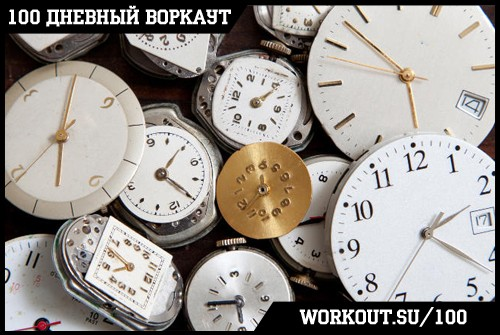

100 Дневный воркаут
<==== Вернуться к оглавлению
День 35. Развитие мотивации
Ну вот и очередная неделя нашей образовательной программы
"100 дневный воркаут"
подошла к концу, и по традиции в последний день тренировочной недели мы отдыхаем и растягиваемся.
!!! Этот день считается полноценным пройденным днём программы вне зависимости от того, тренируетесь вы сегодня или отдыхаете !!!
Вовремя вспомнив о главном пора переходить и к теме сегодняшнего инфо-поста. А он у нас будет посвящен одной очень важной штуке, одной из тех, которая отделяет вас от ваших целей. Я говорю о Мотивации. Потому что можно сколько угодно смотреть видео в интернете, читать посты, узнавать все самые новые тренировочные секреты, тратить деньги на различное оборудование и абонементы в фитнес клубы, но если у вас нет внутренней мотивации к тому, чтобы начать менять себя и свою жизнь, то ничего и не произойдет!
Изменения начинаются в тот самый момент, когда вы реально начинаете что-то делать из того, о чем узнали, а не просто говорите себе "все, теперь я знаю все что нужно и с понедельника пойду заниматься". Сколько уже было таких понедельников в вашей жизнй Сколько раз вы обещали себе что-то сделать, но не делали этого и всегда находили достаточно весомые отговорки и причины? Я и сам не раз попадался на эту удочку, потому что гораздо проще сказать себе "в следующий раз", чем реально пойти и сделать!
Когда ты приходишь домой с работы в 10-ом часу весь убитый, пока поешь и сделаешь дела по дому, уже 12 на часах и ты понимаешь, что все что тебе сейчас хочется - это просто лечь спать. Но если ты так сделаешь, то у тебя не будет пресса кубиками, потому что пресс растет от тренировок, а не от лежания на кровати! Мне потребовался не один месяц, чтобы это осознать, чтобы начать заставлять себя, неважно в каком состоянии я был, все равно идти и тренироваться. Да, в начале у меня было даже стойкое отвращение, но чем больше дней проходило, тем больше мне нравилось тренироваться. Я уже не обращал внимание на то, насколько уставшим я был, потому что с первых повторений я заряжался энергией и драйвом и мне хотелось довести тренировку до конца! Таким образом я тренировал пресс, это отнимало у меня минут 5-15 всего, поэтому я не знаю, будет ли такой подход работать для полноценной часовой тренировки, но зато я точно знаю, что если вы не будете тренироваться, то результатов у вас точно не будет!
Изменения начинаются не с понедельника, не с начала месяца и даже не с нового года! Изменения начинаются тогда, когда вы их начинаете! Просто сделайте шаг вперед и начните двигаться навстречу своим целям!
Окей, допустим вы смогли победить свою лень и пришли на тренировку. Особенно меня радует огромное количество людей, которые начинают заниматься после нового года или перед пляжным сезоном, чтобы привести себя в форму. Просто приходишь на площадку и видишь десятки случайных людей, делающих случайные вещи непонятно зачем. Они так же как и вы смогли победить свою лень и замотивировать себя прийти на тренировку. Но знаете что? Через пару-тройку недель их уже не увидишь на площадке! Почему? Да потому что их мотивации хватило только на эти пару-тройку недель! Они думали "о, надо бы начать тренироваться и привести себя в форму", но походив пару недель и не увидев значительных изменений они начинают думать "да это все бестолку, результатов все равно нет". Не будьте такими как они! Если вы 5 или 10 лет вели не самый активный и здоровый образ жизни, то с чего вдруг вы ожидаете, что пара недель тренировок смогут исправить все эти годы? Воркаут и тренировки - это не волшебная пилюля, которая разом решит все ваши проблемы, но это способ с помощью которого их можно решить! И для этого нужно тренироваться! Я уже писал об этом в
инфо-посте о контроле прогресса
:
Интересный факт!:
Когда вы начинаете заниматься воркаутом, то через 12 недель вы заметите результат, через 24 недели ваши изменения заметят близкие, через 36 недель друзья и знакомые, ну а через 48 недель весь мир!
Не стоит ожидать быстрых результатов, но если вы будете усердно тренироваться, то со временем они придут. Я на 100% уверен, что пройдя 100 дневный воркаут вы будете значительно отличаться от того, каким вы были в начале пути! Но даже 100 дневка - это только начало вашего дальнейшего пути саморазвития, длиною в жизнь! ;)
Вообще я сейчас затронул очень обширную тему о которой можно разговаривать часами, поэтому перевожу беседу в практическое русло. Вот несколько советов, которые помогут вам сохранять мотивацию:
Найдите партнера
Вместе с кем-то тренироваться гораздо лучше, чем в одиночку. Я говорю сейчас не только о том, что ваш партнер может помочь вам в изучении элементов или выполнении повторений, когда собственных сил уже недостаточно, я говорю ещё и о том, что он будет для вас моральной поддержкой! Допустим у вас был не самый лучший день, и в конце этого не самого лучшего дня у вас нет никакого желания тренироваться, а, напротив, есть желание взять баночку пива, сесть на диван и посмотреть телевизор. Так вот, если у вас есть партнер для тренировок, то он наверняка в этот самый момент позвонит вам и спросит "чувак, ты приедешь сегодня на тренировку"? И если в этот момент вы ответите "Не, знаешь, день не задался, к черту все, нет желания тренироваться", то вы просто подставите своего друга! Того, который рассчитывает на вас, того, который поддерживает вас на тренировках и мотивирует двигаться вперед. Довольно легко сдаваться, когда от тебя никто не зависит, потому что для самих себя мы можем придумать какие угодно оправдания (и выше я уже писал о том что сам не раз попадался в эту ловушку), но кем надо быть, чтобы подставлять своих друзей???
Если вы хотите достичь успеха в жизни, вам нужно научиться сдерживать свои обещания. Немного чести, если вы с кем-то о чем-то договорились, а потом в последний момент меняете свое решение. С таким подходом далеко не уехать, ни в тренировках, ни в бизнесе, ни в жизни. Подумайте об этом.
Ставьте временные рамки

Поставьте перед собой какую-нибудь цель на ближайшие 3 месяца (или 100 дней, например). Теперь, каждый раз, когда вам захочется пропустить тренировку, это будет не абстрактный пропуск, вовсе нет, вы просто выкидываете 1% от ваших возможностей добиться поставленной цели. Хотите ещё больше мотиваций Расскажите о своей цели родным и друзьям, чтобы они знали, чего вы хотите добиться через 3 месяца. Я выше уже писал про то, что нужно учиться сдерживать свои обещания, иначе ваши слова будут малого стоить. Так что теперь каждый раз, когда вы будете думать о том, чтобы пропустить тренировку, вы так же будете думать и о том, как будете смотреть в глаза людям, когда соберетесь рассказать им, что не смогли достичь своей цели, потому что слишком много ленились!
Фиксируйте прогресс
Заведите
тренировочный дневник
, записывайте туда свои тренировки, фиксируйте туда свои результаты, показатели (вес и объёмы), делайте фотографии каждую неделю (я лично делаю фотки раз в месяц). Потому что без всего этого у вас не будет объективной картинки. Фитнес - это не всегда прогресс, бывают и спады, и плато, и дни, когда вы не видите смысл тренироваться дальше, потому что вам кажется, что вы не развиваетесь. В такие дни очень полезно заглянуть в ваш дневник тренировок! Посмотрите каким вы были в начале пути, посмотрите какой путь прошли! Нередко в дневнике (если вы ведете его подробно) можно найти ответ и на вопрос, как преодолеть текущий застой в тренировках!
И ещё один последний, но очень полезный совет - окружайте себя людьми, которые заряжают вас энергией! Говорят, что вы представляете собой среднеарифметическое из пяти человек, с которыми общаетесь больше всего в своей жизни. Так задумайтесь, кто эти людй Чего они хотят добиться в жизнй Являются ли они для вас примером для подражания и источником мотивации, или вам только приходится тратить на них свое время? Может быть это так называемые ваши друзья, которые не понимают вашего желания заниматься и совершенствовать себя и поэтому каждую пятницу зовут в бар? Может быть это люди, которые любую вашу иницативу встречают негативно и не верят в ваши силы? Зачем они вам в вашей жизнй Они просто тратят ваши силы и энергию в пустую! Не нужно бояться сказать им "до свидания", потому что в тот самый момент, когда вы решили измениться, а они решили остаться прежними, ваши пути разошлись. Вы теперь идете разными дорогами и не нужно пытаться перетащить их на свой путь (особенно если они сопротивляются), вы найдете новых друзей, новых людей, которые будут разделять ваши взгляды и ценности, тех, кто будет поддерживать вас и понимать важность и ценность того, чем вы занимаетесь. И я говорю сейчас не только о тренировках, но и вообще о жизни, о работе или об отношениях.
Это ваша жизнь и только вам решать, какой она будет!
Опять много слов получилось, но тема интересная, поэтому, надеюсь, вам тоже было интересно узнать мои мысли на этот счет.
P.S.
Парень смог изменить себя за 70 дней. Все реально, если приложить усилия ;)
======> День 36. Понимание вместо Повторения